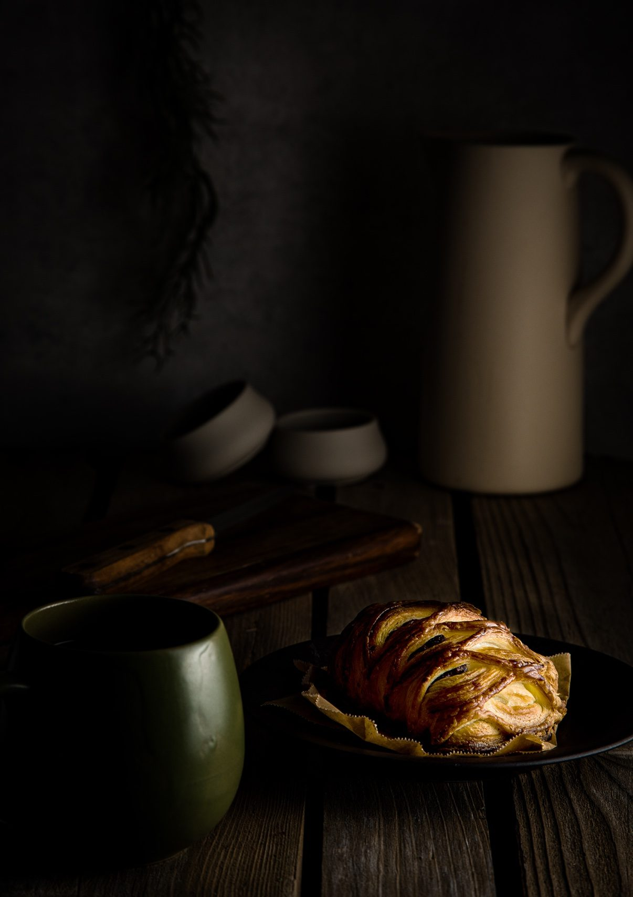
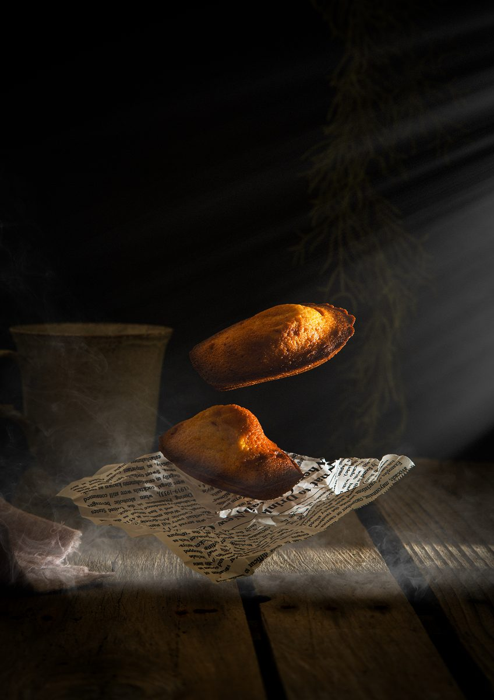

飲食店・カフェの方へ
メニューやSNSで、料理の空気感まで伝わる一枚に
看板メニューの撮影から承ります

名古屋のフードフォトグラファー syukoc
食の美しさを、光と影を纏わせたアートな一枚に
儚い芸術を、永遠に残る1枚に
盛り付けられた一皿は、やがて消えていくもの静謐な静物から、動きのある浮遊表現まで
写真を大きく、言葉は少なく




オランダ黄金期の静物画と、キアロスクーロの光
派手に飾るのではなく、一筋の光で素材の質感と佇まいを引き出します
静謐な世界観から、みずみずしく豊かな表情まで
商品の性格に合わせて、光の当て方を変えています
一枚ずつ丁寧に撮影し、Photoshop で仕上げます
メニュー、EC、SNS、パッケージなど、使い道に合わせた構図でお渡しします
メニューやSNSで、料理の空気感まで伝わる一枚に
看板メニューの撮影から承ります
パッケージや商品ページで目に留まる、質感のある表現
浮遊や断面など、動きのあるカットも可能です
焼き色や層の美しさを、そのままに
季節商品や新商品の撮影に対応します
時間ではなく、アイテム数と内容で決まります
まずは目安としてご覧ください
1アイテムにつき 2カット 商品そのままの美しさを残す基本の撮影
器や背景、小物まで整えた世界観のある一枚
浮かぶ、舞う、弾けるなど、編集・合成を伴う表現
撮影料と機材費の合計が ¥18,000 未満の場合は、最低料金 ¥18,000 が適用されます
内容に応じてお見積もりしますので、まずはご相談ください
公式LINE またはお問い合わせフォームから
撮りたいものをお聞かせください
内容を確認し、構図や日程、料金の目安をご案内します
出張撮影、または商品をお預かりしての撮影を行います
一枚ずつ仕上げてお渡しします
目安は撮影後2週間以内です
フードフォトグラフィーを中心に、国際写真賞で受賞を重ねています
キュレーション制の写真プラットフォーム 1X.com にて
「Silent Tea」「The Quiet Table」など100作品が掲載されています
まずは公式LINEで、撮影したい商品とご希望の時期をお送りください
内容を確認して、こちらからご返信します